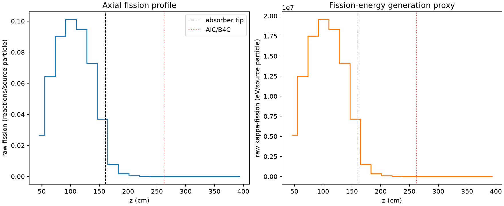
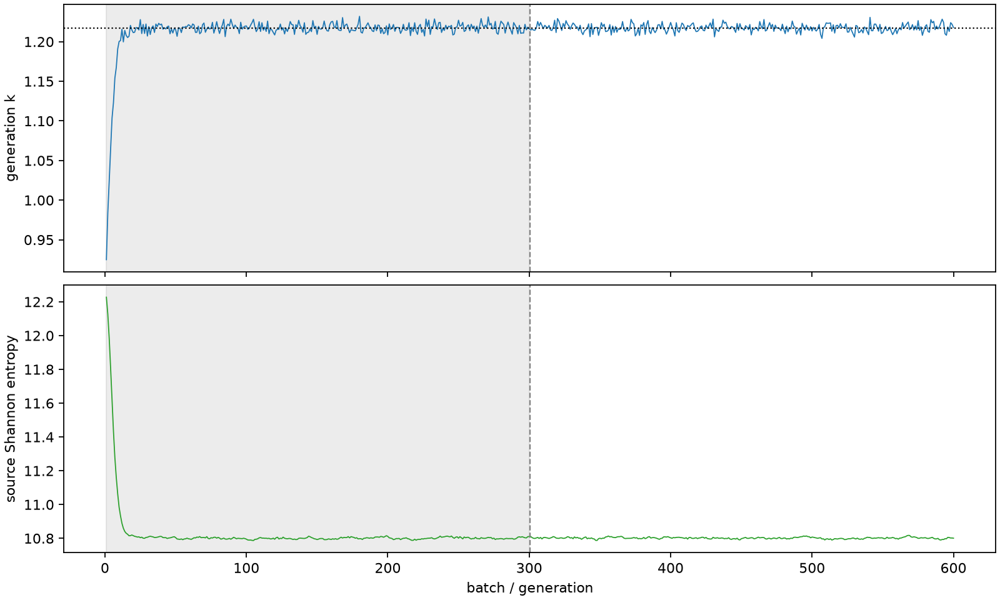

| field | value |
|---|---|
| experiment | V2-STAGE_256_OGRENCI_02-0005 |
| k | 1.2175132345195583 |
| MC standard error | 0.00019089074076785448 |
| seconds | 955.0568618859979 |
| acceptance | not_assessed |
| convergence | review_required |
Completed is output integrity only; physical and statistical review required. Zero tallies do not prove zero production or zero uncertainty.
| diagnostic | value |
|---|---|
| geometric fuel voxels | 5280 |
| zero fission tally voxels | 1473 |
| low signal fuel voxels | 2382 |
| low signal fission share | 7.137636003959124e-05 |
| low signal kappa share | 7.140168306624998e-05 |
| important fission share | 0.9500916778701227 |
| previous filter included | 2898 |
| duration estimate s | 1562.5173488400023 |
| actual minus estimate s | -607.4604869540044 |
| fission relative MC error | statistics |
|---|---|
| all_geometric_fuel | {"voxels": 5280, "positive_mean_voxels": 3807, "zero_mean_voxels": 1473, "undefined_relative_error_voxels": 1473, "median": 0.01770375862613528, "p95": 0.9043149176659948, "maximum": 1.0000000000000002} |
| low_signal | {"voxels": 2382, "positive_mean_voxels": 909, "zero_mean_voxels": 1473, "undefined_relative_error_voxels": 1473, "median": 0.5547130177515059, "p95": 1.0, "maximum": 1.0000000000000002} |
| important_95pct | {"voxels": 1699, "positive_mean_voxels": 1699, "zero_mean_voxels": 0, "undefined_relative_error_voxels": 0, "median": 0.006171959243734876, "p95": 0.00989244473810951, "maximum": 0.010966615049512221} |
| outside_previous_filter | {"voxels": 2382, "positive_mean_voxels": 909, "zero_mean_voxels": 1473, "undefined_relative_error_voxels": 1473, "median": 0.5547130177515059, "p95": 1.0, "maximum": 1.0000000000000002} |
| kappa_fission relative MC error | statistics |
|---|---|
| all_geometric_fuel | {"voxels": 5280, "positive_mean_voxels": 3807, "zero_mean_voxels": 1473, "undefined_relative_error_voxels": 1473, "median": 0.017679790558692267, "p95": 0.9031518354441055, "maximum": 1.0000000000000002} |
| low_signal | {"voxels": 2382, "positive_mean_voxels": 909, "zero_mean_voxels": 1473, "undefined_relative_error_voxels": 1473, "median": 0.5535742249542955, "p95": 1.0, "maximum": 1.0000000000000002} |
| important_95pct | {"voxels": 1699, "positive_mean_voxels": 1699, "zero_mean_voxels": 0, "undefined_relative_error_voxels": 0, "median": 0.0061659425521780244, "p95": 0.009881043183936952, "maximum": 0.010955389466310726} |
| outside_previous_filter | {"voxels": 2382, "positive_mean_voxels": 909, "zero_mean_voxels": 1473, "undefined_relative_error_voxels": 1473, "median": 0.5535742249542955, "p95": 1.0, "maximum": 1.0000000000000002} |
| axial bin | fission share | kappa-fission share |
|---|---|---|
| 1 | 0.05381937807425027 | 0.05382123398903454 |
| 2 | 0.12972067379696206 | 0.12971911081669038 |
| 3 | 0.18176862115511358 | 0.18176652088272913 |
| 4 | 0.20305616493515288 | 0.20305354585001564 |
| 5 | 0.19074303864128134 | 0.19074053819305278 |
| 6 | 0.14631021477912448 | 0.14630826446476244 |
| 7 | 0.0743076617101385 | 0.07430970549653128 |
| 8 | 0.01542158790124395 | 0.015426713840230165 |
| 9 | 0.0036788971889099853 | 0.003680198876431355 |
| 10 | 0.0008898685592439436 | 0.0008901808682873027 |
| 11 | 0.0002175056320050364 | 0.000217574644163524 |
| 12 | 5.0479101337037403e-05 | 5.049828503192849e-05 |
| 13 | 1.3365113282197001e-05 | 1.3369094547705287e-05 |
| 14 | 1.8900622795609497e-06 | 1.8915091646796186e-06 |
| 15 | 6.119986373735652e-07 | 6.118870298705198e-07 |
| 16 | 4.135103788661086e-08 | 4.1302297240639897e-08 |
| 17 | 0.0 | 0.0 |
| 18 | 0.0 | 0.0 |
| 19 | 0.0 | 0.0 |
| 20 | 0.0 | 0.0 |
Histories include the inactive-to-active transition at batch 300. kappa-fission approximates fission energy production, not total heat deposition.

